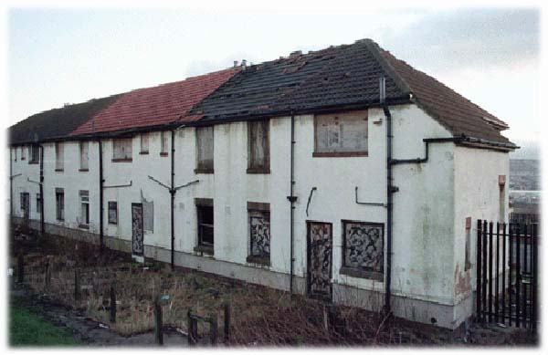

your new squat:
the weak points

Many squats may have serious or minor structural defects, such as damaged roofs, walls and floors. Fire damage is also a common reason for a house being left empty. It is important to first check before moving in that any such defects are not dangerous.
You may find that if your squat has all it's windows boarded up you don't get any natural light. This can be pretty demoralising, especially if you don't yet have any electricity. Take off the boards carefully. Avoid damaging the house, as this will get you swiftly evicted.
Rubbish can be a problem, and not just the hastle of tidying the garden. Most empty buildings are filled with the detrius of their previous occupiers. Items may have been destroyed and strewn around the house by inquisitive teenagers, and it's not that unusual to find human faeces waiting to
surprise you.
Sometimes, you might not have any windows or doors at all. Apart from the obvious problems of drafts and rain, this situation provides you with no security. Replacing windows and doors may help you stay in the property longer as you can prove
that you've looked after the place.
Doors are fantastic. Doors protect us from the elements and keep out unwelcome visitors. Symbolically, doors turn houses into homes, defining inside and out. If you havn't got a door, skip hunting and some simple carpentry skills are a good idea. If you've got a door that's boarded up it shouldn't be too difficult
to make it open, close and
maybe even lock.
Call it acts of god, bad karma or probability; you just can't account for reality playing tricks on you and sending really wierd things like lightning strikes, flash floods or buffalo stampedes. You'll probably have to get used to things like this, they seem to happen more often to squats.
Roll the mouse pointer over the numbers for more information.